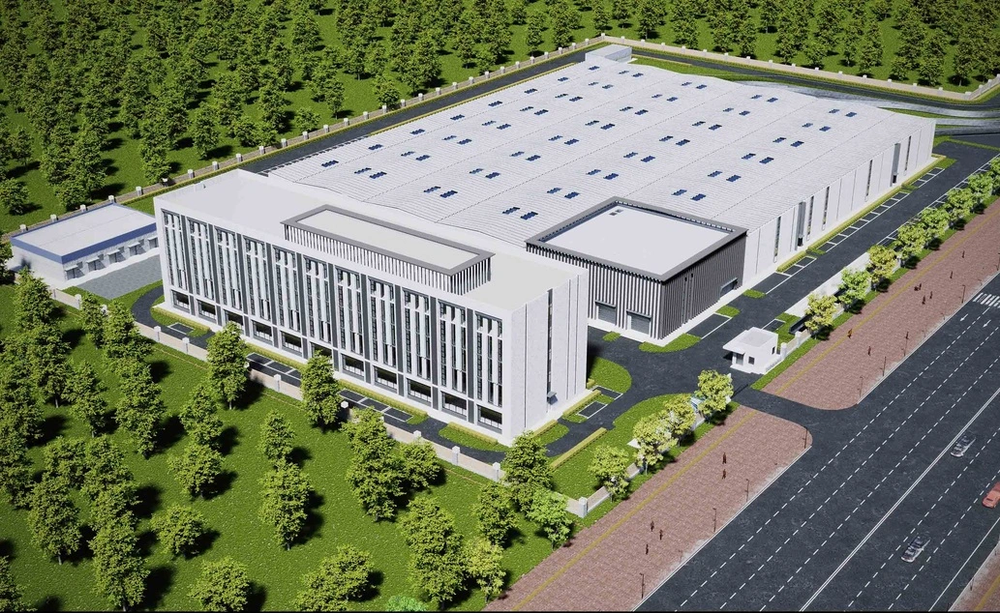
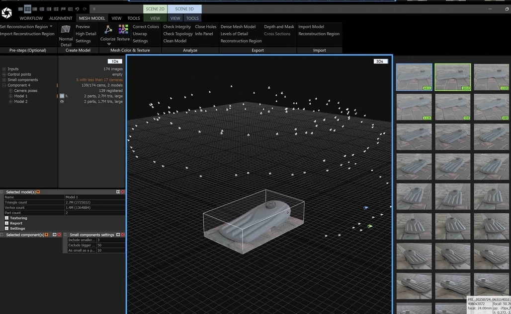
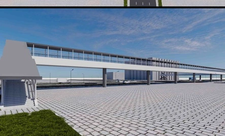
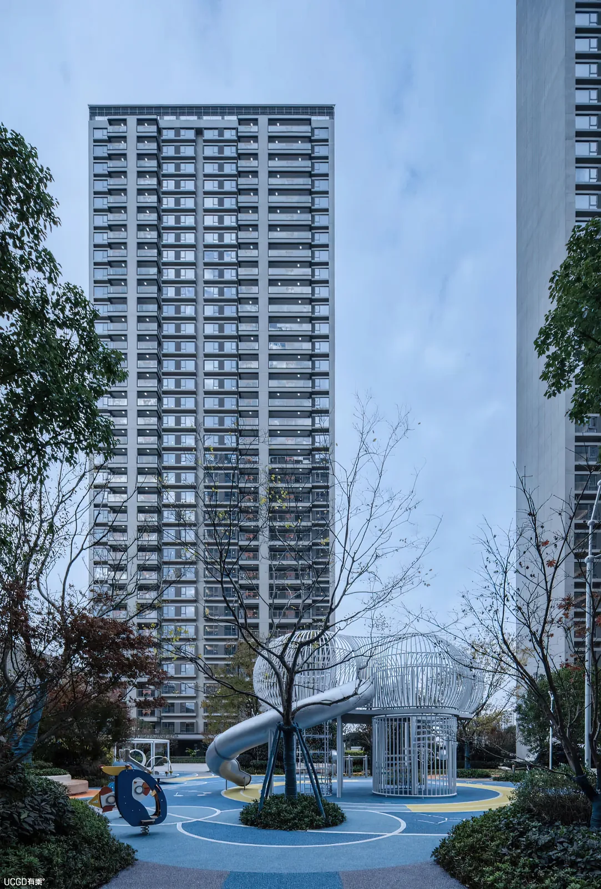
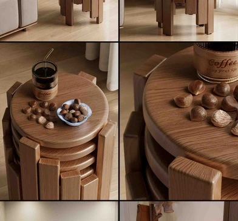
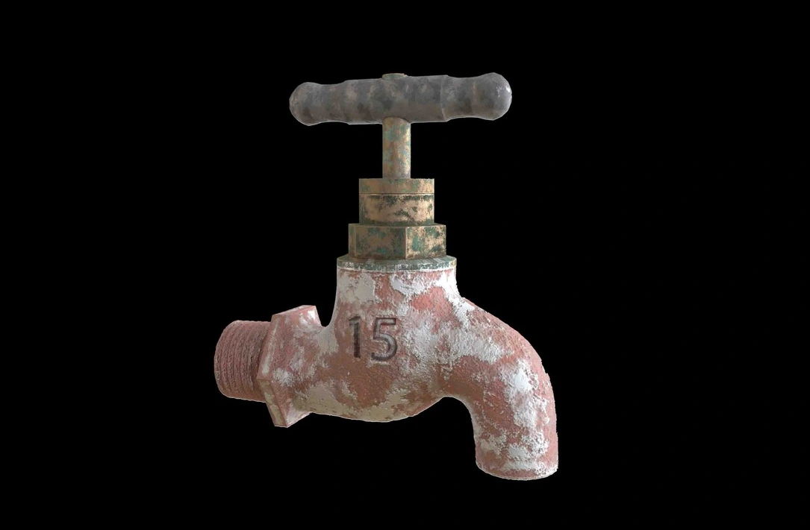

轨道交通车辆基地
建筑建模 / 视觉表现
以车辆基地建筑与场地关系为重点，通过鸟瞰和透视画面展示建筑体量、立面与整体环境。
AutoCAD / SketchUp / 3ds Max
Vaiorett / 个人作品集
兼具工程制图的严谨与视觉表现的审美。
覆盖三维数字化、空间与产品渲染、CAD 图纸协作及 AIGC 提效流程。

01 / 作品
查看作品、制作内容与个人职责。
团队项目保留原团队设计署名。
建筑建模 / 视觉表现
以车辆基地建筑与场地关系为重点，通过鸟瞰和透视画面展示建筑体量、立面与整体环境。
AutoCAD / SketchUp / 3ds Max

资产制作 / 拓扑与材质
以产品高精度三维资产为核心，连接数字化采集、模型优化与材质制作，支持数字产品交付。
RealityCapture / Blender / UE5 / 3ds Max

方案建模 / 建筑表现
参与赛车场看台及配套空间的方案协作，借助模型与效果图表达立面、体量及空间关系。
SketchUp / 3ds Max / D5

场地建模 / 效果图制作
根据设计师的人行天桥方案构建场地与桥体模型，用多视角效果图辅助方案沟通。
AutoCAD / SketchUp / 3ds Max

模型制作 / 住宅表现
通过建筑模型和多视角效果图，呈现住宅建筑、公共空间与场地的关系。
SketchUp / 3ds Max / Photoshop

材质制作 / 灯光与渲染
围绕家具产品的材质、光影与场景氛围，制作面向电商展示及产品宣传的渲染画面。
3ds Max / V-Ray / Chaos Vantage

空间建模 / 效果图
从空间布局、材质到自然光表现，记录室内空间的设计与可视化练习。
SketchUp / 3ds Max / Photoshop

模型与材质表现
以物体表面和材质变化为切入点，探索三维模型、纹理与光影的表达。
3D Modeling / Materials / CGI
02 / 专业能力
03 / 关于
我是 Vaiorett，专注于数字视觉表现、三维数字化工程与 AI 辅助工作流实践。
过往经历涵盖三维数字化工程师、产品渲染、建筑 CAD 制图与室内设计协作，熟悉从图纸深化、高精度建模、材质灯光到图文排版（Photoshop / InDesign）的完整制作与交付链路。
同时具备工商企业管理学习背景与 ISO 9001:2015 内审员证，熟练使用 Linux（Fedora KDE / Ubuntu GNOME）环境及 ComfyUI、Stable Diffusion、大语言模型等工具优化内容制作与技术文档流程。
产品数字化
家具产品展示
建筑设计协作
室内设计实践
大专在读 · 开放教育
高级工教育背景
全国计算机等级考试一级 · 计算机基础及 MS Office 应用
室内装饰设计师三级
ISO 9001:2015 内审员证
04 / 联系
专注非销售类的视觉设计、三维/CAD 工程技术、AIGC 内容制作、项目文控与数字化支持岗位，欢迎通过邮件联系。